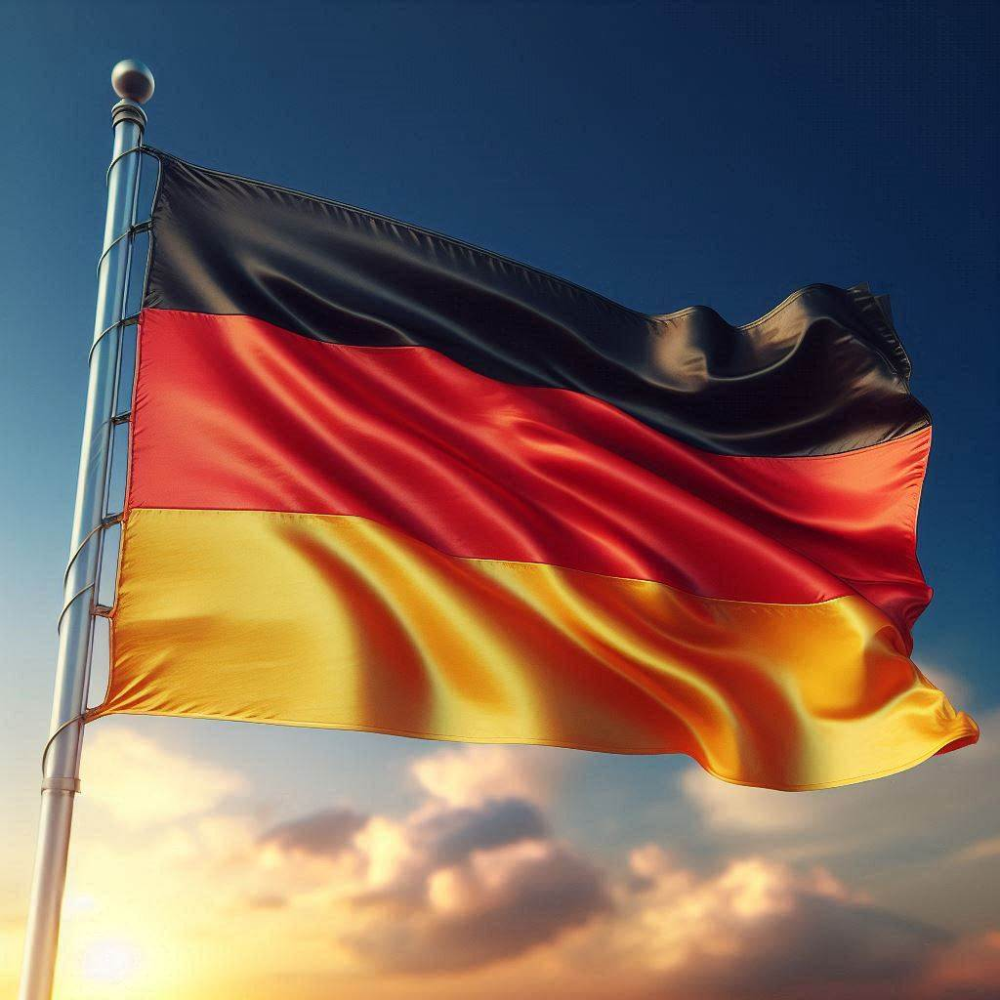
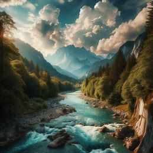
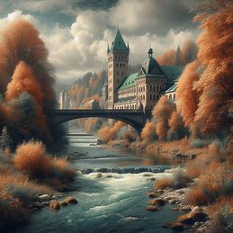

Welcome to Munich!
Munich, Germany, is a city that pulses with history, where imposing architecture mixes with the tradition of breweries and the beauty of lush parks.
Official Country Flag
Official country name: Germany
Map View
Geography

Munich is situated in southern Germany, along the banks of the River Isar, on the plateau of the foothills of the Bavarian Alps, at an altitude of more than 500 meters above sea level. It is approximately 70 km from the Austrian border and within walking distance of the Bavarian Alps.
Natural Resources
Munich, famous for its culture and beer, is also notable for its natural resources. The city is bathed by the Isar River, ideal for outdoor activities, and has an extensive green belt with forests, like the one in Bavaria, perfect for trails and picnics. Lakes such as Starnberger and Ammersee invite you to an invigorating swim or a boat trip. Drinking water high quality comes from the Bavarian Alps, and the mountains, the just an hour's drive away, they offer stunning landscapes to winter sports and mountain trails. Munich: nature and culture in perfect harmony.
Land and Water Resources
Their most famous resource is the Isar River, which crosses the city and offers a variety of leisure options, such as swimming, fishing, rowing and boat trips. The banks of the river are adorned by green parks and leisure areas, such as the Englischer Garten, one of the largest urban parks in Europe. The city also has numerous lakes, such as Lake Starnberger and Lake Ammersee, perfect for swimming, sailing and water sports. It is worth mentioning that the mountainous landscape of the Alps, which is about an hour's drive from Munich, also contributes to the region's natural beauty and offers diverse options for outdoor activities, such as skiing, snowboarding and mountain trails.
Climate and Vegetation
Munich boasts a temperate continental climate, with well-defined seasons. Pleasant summers, with average temperatures between 17°C and 24°C, invite you to enjoy parks and outdoor activities. Winter is cold and snowy, with average temperatures between -2°C and 4°C, perfect for winter sports and cozy cafes. The vegetation is marked by forests in the surroundings, with vibrant colors in autumn. In the urban center, parks such as the Englischer Garten offer a verdant refuge, while the River Isar provides freshness and leisure. Munich: a destination for all seasons, with climate and vegetation that change throughout the year.
Demographic Informations About Munich
- Total population: 1,42M (2019)
- Ethnic groups: Germans, Turks, Poles, Italians and Russians.
- Religions: Christianity, Islam, Judaism, Buddhism, Hinduism and no religion.
- Languages: Official language: German, but English is also widely used.
- Literacy rate: 99% for population aged 15 and over.
- Internation code number: Germany: 49 Munich: 89 +49 89(phone number).
- Time zone: 5 hours ahead.
- Currency value against the R$: 1 Euro = R$ 5,93 (12/07/2024)
Two Weeks for three Persons in Munich
Brazilian holders of ordinary, diplomatic and functional passports or other official passports may enter Germany and the entire Schengen region or transit for tourist or commercial purposes and remain there without a visa for a maximum of three months for each period of six months.
15:15 Base Canoas (ONS). Travel time 1 h 45 min 17:00 Guarulhos International Airport (GRUI) LATAM. Economy A320 LA 9213. Plane and crew from Latam Airlines Brazil. 6 h 45 min layover Paulo (ORU) 23:45. Guarulhos International Airport (GRIJ) Travel time: 11 h 45 min Overnight 16:30. Frankfurt Airport (PRA). LATAM - Economy Boeing 777 LA 8070. Plane and crew from Latam Airlines Brazil. 1 h 45 min layover Frankfurt am Main (FRA). From Frankfurt (FRA) Travel time: 55 min Munich-Franz Josef Strauss Airport (MUC) Lufthansa Economy A320 116 Plane and crew from Lufthansa with Latam Airlines Brazil. Price €3,905.97

Brera "Incredible" Apartment: The spacious and elegant incredible apartments with 1 to 2 bedrooms are perfectly suitable for your new home for a longer stay. The spacious kitchen area, dining area, and a cozy reading nook invite you to cook and relax. The bedroom with a queen-size bed and a spacious wardrobe offers plenty of space for your belongings. Free Wi-Fi and an 81 cm HD TV enrich your digital life. The keyless hotel system ensures a stress-free arrival. Per night for 3 people €265.89. (02/10) until (19/10) €4,519.59

Entry to Munich's Oktoberfest is 100% free. You only pay for what you consume in the tents or attractions. On average, beer costs from €13 and food from €9. 2.8km from the Hotel.

You will have a guided tour of the Oktoberfest grounds with transportation included. Explore the traditional shows and parallel attractions and learn about their history. Reserved seats in a huge beer tent with an incredible party atmosphere. Included: two liters of beer, a typical Oktoberfest meal, a songbook, and a badge. Your guide will explain the traditions and customs that define Oktoberfest. €495

Go to Oktoberfest, drink a lot, around €90 per person, and eat a lot too.

Go to Oktoberfest and drink even more.

Dachau Concentration Camp: Near Munich, Dachau was the first German city to have a concentration camp. To get there, take the S2 to Dachau station, then bus 722 to the Memorial entrance. Open from 9 am to 5 pm, except on Mondays. Free entry. At the entrance, the lie: "Arbeit Macht Frei" ("Work sets you free"). Among Jews, political activists, and other minorities, more than 200,000 were imprisoned, of which 31,951 officially died there. Thousands more were transferred, meeting the same fate in various concentration camps that would be built across Europe. Since 1965 it has been a symbol in memory of the victims of Nazism, functioning as an important museum, full of photos, films, and documents. Walk through the somber open spaces where the dormitories were, see the expressive memorial, and also the insane furnaces and crematoria. Bitter and unmissable - it must be visited. Free entry. 22.2km from the hotel.
The German Museum is one of the largest museums of science and technology in the world. It houses a vast collection of exhibitions covering diverse topics, from the history of aviation to robotics. The museum is an excellent place to learn about science and technology in a fun and interactive way.

The Englischer Garten is one of the largest urban parks in Europe. It's a popular spot for walking, picnicking, and water sports. The park also features a Japanese garden, a Chinese tower, and an open-air theater. The Englischer Garten is a great place to relax and enjoy nature. You can stroll through the park, have a picnic by the river, or catch a performance at the outdoor theater.

Day Trip to Neuschwanstein Castle: The castle is known for its fairy tale-like architecture and picturesque setting. A day trip typically includes transportation, a guided tour of the castle, and free time to explore the surrounding area. Total cost around €65 per person. Distance 129 km from the hotel.

Day Hop-On Hop-Off Ticket (All 13 Stops) Embark on Munich's hop-on hop-off bus circuit and explore the city in detail with onboard audio guide. Marvel at local highlights, including the world's fourth-largest bell, the full-body relic of Saint Munditia, and the historic Old Town. Choose from three different routes to suit your preferences and interests. On sunny days, enjoy your ride on the open-top deck for panoramic views and feel the sun on your face. Hop on and off at your leisure or stay onboard to listen to fascinating explanations from the audio guide, available in 10 different languages. Choose from three circuits: the City Tour, the Nymphenburg-Olympiapark Circuit, and the Schwabing Circuit, each lasting 1 hour. Pass by major city landmarks such as Nymphenburg Palace, Olympic Park, Englischer Garten, the historic Old Town, Odeonplatz, and Marienplatz, among others. €20.00

BMW Museum Pautelring 130. U3 Metro Olympia Zentrum. Open daily from 9am to 5pm, costs €2.50 / €2 (student). For lovers of the brand's cars, an exhibition featuring films and slides of the factory's history with vehicles produced in the past and projections for the future. Adults: €10 (US$10.80). Under 18s, students, or seniors: €7 (US$7.60).

Frauenkirche, Built in 1494, the Frauenkirche (or Cathedral of Our Blessed Lady) is Munich's largest church and a major city landmark. Its tall towers, constructed in 1524, can be seen from any point in the historic center. There is even a law prohibiting any construction in the area from exceeding 100 meters in height, ensuring that the towers remain visible from all positions. Starting from €14.00

Munich Zoo - Hellabrunn There's a zoo in Munich that undoubtedly has something special to offer. With over 100 years of history, the zoo houses a vast variety of species divided into 13 different areas. Some of the must-see areas at the Munich Zoo include: - Polar World: Featuring various animals from the polar regions, including four beautiful bears. - Elephant House: Recently reopened, it's the newest building in the zoo and one of the most fascinating to visit. - Monkey World: There are numerous species of monkeys to be found here. However, chimpanzees and gorillas tend to captivate visitors more with their playful antics and impressive lifestyles. All of these experiences can be viewed through glass, which enhances the overall experience. Starting from €18.00.

Munich Haunting Tour: With this eerie tour through the city, explore the peculiar sites of the northern part of the Old Town, between the chic district of Kreuzviertel with its Promenadeplatz and the aristocratic neighborhood of Graggenau with the world-famous Wittelsbacher Residence. The tour starts on the right foot at the Frauenkirche, where you can encounter the devil himself. Learn how, while trying to hinder the construction of the cathedral, the devil was tricked and left behind an infamous footprint. But that's not all: hear stories of a spooky encounter with a pointed-hat ghost in the cemetery, a heartless miser at Promenadeplatz, and a chubby ghost at Maxtor Gate. Arguably the tour's most chilling point is the Jungfernturm tower, where it's said you can hear the agonizing screams of people tortured to death there. Price: €57.00

The Alte Pinakothek in Munich is the most important of German pinacotheks and one of the most distinguished in the world. Housed in an imposing neoclassical building, the museum originated in the 16th century as a royal collection, which has since grown to encompass over 8,000 works today. The museum showcases approximately 700 paintings from its collection, featuring highlights from early German masters, Flemish painters, as well as Italian, French, and Spanish paintings from the 16th to 18th centuries. Prices: - Adults: €7 (approx. R$41.30) - Students: €5 (approx. R$29.50) - Sundays: €1 (approx. R$5.90)

A walking tour of Munich's Resistance to Nazism: Everyday life changed drastically with the arrival of the Nazi regime. While many blindly followed its policies, numerous brave individuals chose to resist this dictatorship. Join us on this tour to learn about the stories of these heroes who fought for the rights and freedoms stolen during the reign of terror. The tour costs €17.41 per person.

Return flight to Canoas: 18:45. Munich-Franz Josef Strauss Airport (MUC) 1 h 5 min layover Frankfurt am Main (FRA). 19:55 Frankfurt Airport (FRA) Lufthansa Economy A320 LH 117 Plane and crew from Lufthansa with Latam Airlines Brazil 12h 20 min overnight 05:50. Guarulhos International Airport (GRUJ). LATAM - Economy Boeing 777 LA 8071. Plane and crew from Latam Airlines Brazil. 8h 20 min layover Paulo (ORU). 14:10. Guarulhos International Airport (GRUJ). LATAM - Economy Boeing 777 LA 8071. Plane and crew from Latam Airlines Brazil. 18:05. Canoas International Airport (CNO). LATAM - Economy Boeing 777 LA 8071.
We will go to the bakery and come back to the hotel. Check into hotel and rest from the journey.
The total cost of the trip will be €10,056.79 or R$59,471.83. Divided by 3, each person will pay €3,352.26 or R$19,823.94.

Somethings About Munich
- Beer gardens: Munich has more than 60 beer gardens (Biergarten), and enjoying a beer in one of them is among the unmissable things to do in the city.
- Munich is the world headquarters of BMW: Car manufacturer BMW has the luxury of having its own zip code. The headquarters is located close to Olympiapark and visiting BMW Welt is among the city's main attractions.
- Surfers take advantage of the Eisbach River in the Englischer Garten to surf: In Munich, in the famous Englischer Garten, many surfers take advantage of the “waves” of the river to surf. There are usually countless spectators marveling at the sheer peculiarity of it all.
- Oktoberfest actually starts in September: Oktoberfest, the biggest Beer Festival in the world, takes place every year in the city of Munich and starts in mid-September until the first week of October. The festival receives approximately 6 million visitors from various countries.
References
-
Airbnb: https://acesse.one/ZhoTh
- Flight informations: https://l1nk.dev/P1yl2
- Oktoberfest tour: https://encurtador.com.br/bs0La
- About visa: https://encurtador.com.br/bT7UA
- Attractions: https://encurtador.com.br/HBUjO
- Ethnic groups: https://encurtador.com.br/Er8wXv
- Literacy rate: https://acesse.dev/g4rPa
- Somethings about Munich: https://encr.pw/z18d2